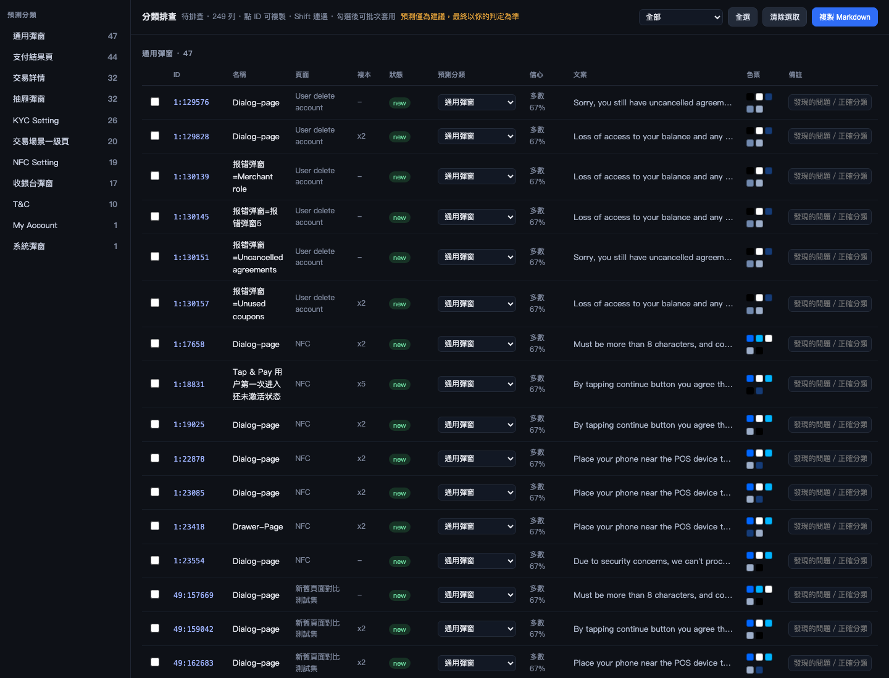

數據脫水的核心方法
一個 462 MB 的 Figma 檔，如何變成一張能回答「有多少個彈窗頁面」的圖譜——以及為什麼模型可以靠它工作。
00為什麼要拆開黑盒
這個專案是從一個真實的工作日開始的（故事在 index.html）。做完之後，我把它拿給別人看；最常被問到的不是「用了哪個模型」，而是：
問的人不一定懂技術，但他們想知道的是同一件事：這件事你能不能控制、能不能改、能不能換一個場景重做。
黑盒的問題不在於它不準，而在於它不準的時候你不知道為什麼，要改的時候不知道從哪改。
所以這頁不用「AI 自動理解設計」這種說法，而是把每一步拆成可驗證的動作：丟掉什麼、留下什麼、壓成什麼、模型在哪裡介入、答案從哪裡來。
01一個問題，兩個答案
先看真實的問題：「這份檔案裡有多少個彈窗頁面？」
這個問題其實是兩個問題，取決於「彈窗」指什麼：
結構定義可以從資料算出來，而且對全部 291 個畫面都成立。語意定義需要人先建立分類，只能回答已標註的部分。
下面的引導，就是模型怎麼在兩者之間走完一次完整的查詢。
02第一步：把檔案攤平
Figma 檔不是資料庫，是一棵由節點組成的樹。要能查詢，先把它變成表格。
462 MB
只讀 20 個欄位
500 筆 / 批
節點表
圖 1：抽取只做一次；之後所有問題都問這張表。
丟掉什麼
| 丟掉 | 為什麼 |
|---|---|
| 向量幾何（path / network） | 資料量最大，但對「這是什麼頁、什麼狀態」沒有幫助 |
| 完整的 style 物件 | 只留顏色、字階、圓角、陰影等統計需要的欄位 |
| 圖示內部的節點 | 小於 64×64 且全為向量時，標記「這裡有圖示」就停止往下 |
留下什麼
大約 20 個欄位，其中三個撐起整個結構：
parent_id 邊：誰是誰的父節點
child_index 順序：誰蓋在誰上面（z-order）
type / bbox 形狀：這是什麼、多大這一步之後，檔案變成「16 萬列的表格」。但它還不是圖譜——只是一堆互不相關的列。
03第二步：長出圖譜
把表格變成圖譜，只做一件事：讓「相同」可以被計算。
接回一棵樹
type + 子節點 hash
圖 2：子樹被壓成 32 字元；比較結構不用再比 16 萬個節點。
這個 hash 是怎麼來的
hash(節點) = md5( 型別 + 依序的子節點 hash )
畫面 A：FRAME [TEXT, FRAME [TEXT, ICON], BUTTON]
畫面 B：FRAME [TEXT, FRAME [TEXT, ICON], BUTTON]
→ 同一個 hash → 同一個家族壓完之後的數字
| 階段 | 數量 | 意義 |
|---|---|---|
| 390×844 的畫面 | 512 | 原始數量（含複本） |
| 結構 + 文案去重後 | 291 | 真正不同的畫面 |
| 結構簽名 | 68 | 只差文案、不差結構的歸為同一種 |
這裡有一個很容易被誤解的點：291 不是「291 個 hash」。有些畫面結構相同、但標題文案不同（例如成功／失敗），它們是同一種結構的不同狀態。所以去重的鍵是「結構 hash + 標題」，這也是為什麼 291 大於 68。
圖譜上額外長出的三個欄位
| 欄位 | 算法 | 回答什麼 |
|---|---|---|
| archetype | 與畫布同尺寸 + 這一層無文字 + 緊鄰上方有更小的兄弟 | 這頁是不是彈窗 |
| family | 同一個 hash 的成員 | 這頁有幾個複本 |
| style profile | 色票 / 字階 / 圓角 / 陰影統計 | 這頁屬於哪個世代 |
「圖譜」指的是：樹狀結構 + 子樹相等性。不是一張視覺化的網，而是讓「相同」變成一個可以查的欄位。
04第三步：模型接到任務
現在把鏡頭切到模型。它收到的不是資料，是一句話：
選工具、讀欄位
圖 3：模型站在問題與工具之間；它不讀 16 萬個節點，只決定「查什麼、怎麼查、怎麼解釋」。
聽懂，並拆成可查的問法
「彈窗」有兩個定義（見第 01 節）。模型不能直接猜一個，它要先知道：結構定義能回答全部，語意定義只能回答已標註的部分。
這一步沒有查任何資料，只是把自然語言變成一個可以執行的計畫。
呼叫第一個工具：list_screens
真實回傳（去掉列表，只留統計）：
total 291
page 172
overlay-panel 87
overlay 32模型在這一步做的事：呼叫、讀三個數字。它沒有「理解」16 萬個節點，也不需要。
完整的一次執行（含真實回傳與判定過程）見 case-popup.html。
讀懂數字，發現差異
87 + 32 = 119。兩個數字都對，但回答的是不同問題：
- 119：所有「蓋在頁面上」的畫面（含沒有面板、只有遮罩的）
- 87：有面板的彈窗（一般人說「彈窗」時想到的那種）
模型的工作是把這個差異講清楚，而不是挑一個數字丟給使用者。
如果要清單，再往下鑽
下鑽的價值：使用者不只知道「有 87 個」，還能把 ID 貼回 Figma 逐一確認。
給出答案，附上定義與可驗證的 ID
完整的回答長這樣：
例：
1:102743、1:102744 都是 page；要看彈窗清單我可以列出 ID。
注意最後一句：每個數字都掛著可查證的 ID。這是「不是黑盒」最具體的證據。
05這個答案為什麼可信
三個理由，都不是「模型很聰明」：
1. 數字是查詢算的，不是模型生成的
291、87、32 都來自同一次 list_screens 的計數。模型就算講錯話，數字也不會變。這是把「計算」與「語言」切開的好處。
2. 規則被人工標註驗證過
| 驗證 | 結果 |
|---|---|
| 42 個人工標註的版面原型 | precision / recall 1.00 |
| 10 個節點實地抽查（設計師在 Figma 比對） | 10 / 10 一致 |
| 全量抽取對帳 | 163,601 / 163,601 |
3. 結果可以被重跑
同一份資料、同一個版本，每次跑出來都是 291 / 87 / 32。模型換一個、對話換一個，數字不變。

06換一個專案，為什麼還能用
因為整套方法只依賴三件事，而這三件事在每一個 Figma 檔裡都有：
| 依賴 | 換專案時要改嗎 |
|---|---|
| 節點有父子關係與順序 | 不用，這是 Figma 的資料模型 |
| 遮罩 = 這一層與畫布同尺寸、無文字、上方有面板 | 不用，這是設計師的慣例 |
| 畫面尺寸（例如 390×844） | 要改，換成該專案的畫布尺寸 |
需要換的還有「分類字典」——但字典可以是空的。沒有字典時，工具仍然回答結構問題（119 / 87），只是不回答語意問題。
這就是為什麼它在支付產品上成立，換到醫療、電商、內部系統也成立：變的是內容，不變的是「結構可以比較」這件事。
07邊界
| 限制 | 影響 |
|---|---|
| 語意分類需要標註 | 沒有標註時，只能回答結構問題；模型不能發明分類 |
| 沒有縮圖 | 看板用色票、型別比例、文案當視覺替代；要看真圖得回 Figma |
| 分類預測只有全票可信 | 留一驗證 57%，全票 86%；其餘進人工複審 |
把邊界寫出來，不是為了免責，而是讓下一個使用者知道什麼時候不該用這個工具。